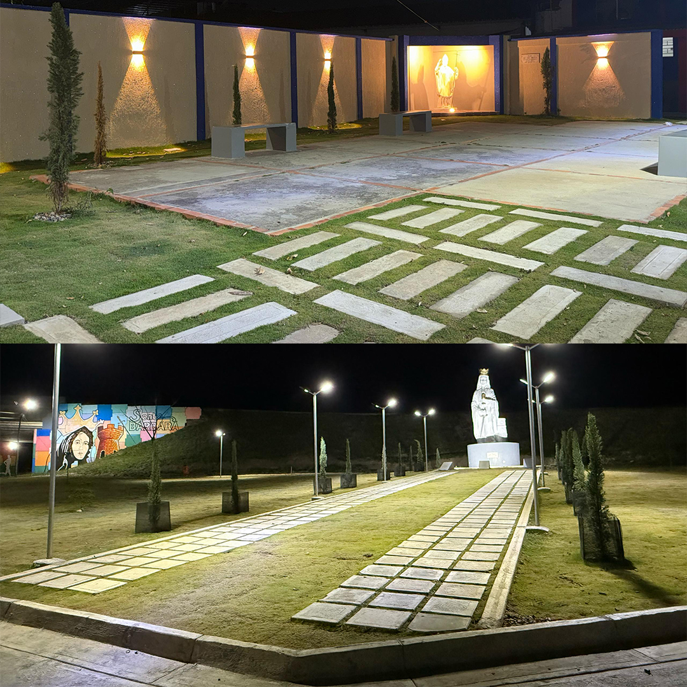
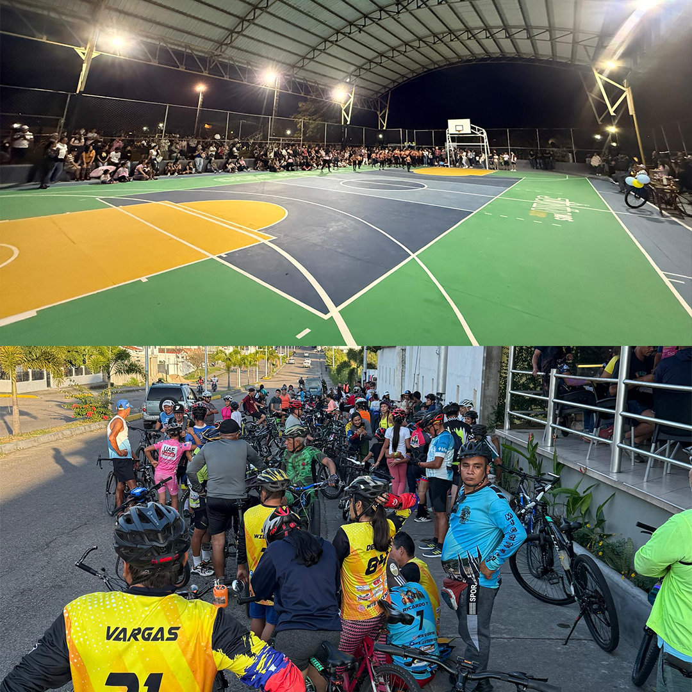

Inauguración de plazas en Junín
En un emotivo evento, la ciudad de Rubio se vistió de gala para la
inauguración de la plaza de Santa Bárbara, un espacio dedicado a
honrar a su patrona celestial. La comunidad rubiense se unió en un
gran número para participar en esta significativa celebración. Uno
de los momentos más aguardados de la ceremonia fue la develación
de la imagen de la santa. Antes de bendecirla, Monseñor Ayala
instó a todos a seguir su ejemplo de fortaleza y perseverancia en
la fe, incluso ante las adversidades. "Ella fue martirizada por su
padre y nunca negó su fe, se mantuvo firme hasta el final",
destacó. Con la inauguración de estos espacios, la Alcaldía de
Junín busca fortalecer la unión de sus ciudadanos en la fe y en la
celebración de sus tradiciones.
Por otro lado, en un ambiente de fe y empatía, se inauguró la
Plaza San Juan Pablo II. Esta plaza, situada en una zona que había
permanecido olvidada y desatendida, ha sido transformada gracias a
la inversión de la alcaldía de Junín, que abarca mejoras en su
infraestructura y paisajismo. Durante la inauguración de la Plaza
San Juan Pablo II, localizada en el sector San Martín de Rubio, el
alcalde de nuestra jurisdicción, Jackson Carrillo Monterrey,
destacó en su discurso dos aspectos significativos de la santidad
del Papa Juan Pablo II: el atentado que sufrió y su posterior acto
de perdón. Este mensaje nos invita a reflexionar sobre la vital
importancia del perdón como una herramienta de transformación
tanto personal como social. Lejos de ser un signo de debilidad, el
perdón representa una muestra de fortaleza y madurez, liberándonos
de la carga del rencor y permitiéndonos construir relaciones más
sanas y justas.

Ciclopaseo y reinauguración de la cancha el Poblado
El primer ciclopaseo del año se llevó a cabo, y con más de 150
ciclistas, nos recordó lo importante que es este tipo de
actividades para nuestra comunidad. Rubio se alegra de saber que
este es el inicio de un año con muchos eventos de esta índole. La
Alcaldía de Junín y el Instituto Municipal del Deporte trabajan de
la mano para un Junín en movimiento.
Al finalizar este mismo día, el punto de llegada del ciclopaseo
fue la cancha múltiple de El Poblado en la cual se realizaría un
acto de reinauguración con la restauración en su totalidad de la
cancha en cada ámbito. En trabajo mancomunado entre habitantes de
diversas comunidades del municipio Junín y el Instituto del
Deporte, se recuperaron durante el año 2024 al menos ocho canchas
deportivas en Rubio. La institución deportiva pone los materiales
y los ciudadanos parte de la mano de obra, dependiendo de los
daños. para este año 2025 hay planes de recuperación de otros
espacios deportivos, pues en la ciudad de Rubio existen equipos de
diversas disciplinas que representan al estado Táchira en otros
estados de Venezuela y en otras naciones, por lo que es necesario
invertir en espacios que impulsen el deporte.

Pavimento Rígido: La alternativa de Junín
El desarrollo urbano no se detiene, y esta vez la ciudad se
prepara para un ambicioso proyecto de pavimento rígido que promete
mejorar la calidad de vida de sus habitantes. Con la finalidad de
optimizar la infraestructura vial existente y ofrecer un tránsito
más seguro y eficiente.
El pavimento rígido, conocido por su durabilidad y resistencia,
representa una solución a largo plazo para los constantes desafíos
que enfrenta la red vial de la ciudad. Este material robusto y
confiable garantiza una mayor vida útil, reduciendo así los costos
asociados a mantenimiento y reparaciones frecuentes. Los
beneficios de este proyecto no se limitan únicamente al ámbito
urbano, sino que también repercutirán positivamente en el medio
ambiente. El pavimento rígido, al ser un material reciclable y de
bajo mantenimiento, contribuirá a la sostenibilidad ambiental y al
cuidado de los recursos naturales.
Impuestos: 20% de descuento
La recaudación de impuestos desempeña un papel crucial en el
funcionamiento del municipio y en el bienestar de la sociedad en
su conjunto. A través de este mecanismo, se obtiene los recursos
necesarios para financiar las actividades y programas,
garantizando así la provisión de servicios públicos esenciales
como salud, seguridad y infraestructura.
La recaudación de impuestos es un pilar fundamental para la
estabilidad y el desarrollo de cualquier sociedad, ya que nos
permite cumplir con nuestras responsabilidades y promover la
igualdad de oportunidades. Es responsabilidad de todos los
ciudadanos contribuir de manera justa y comprometida con el
sostenimiento de un sistema fiscal equitativo y transparente que
beneficie a toda la comunidad.
No dejes pasar la oportunidad de obtener un descuento en el pago
de tus impuestos hasta el mes de marzo. ¡Sé parte del cambio!